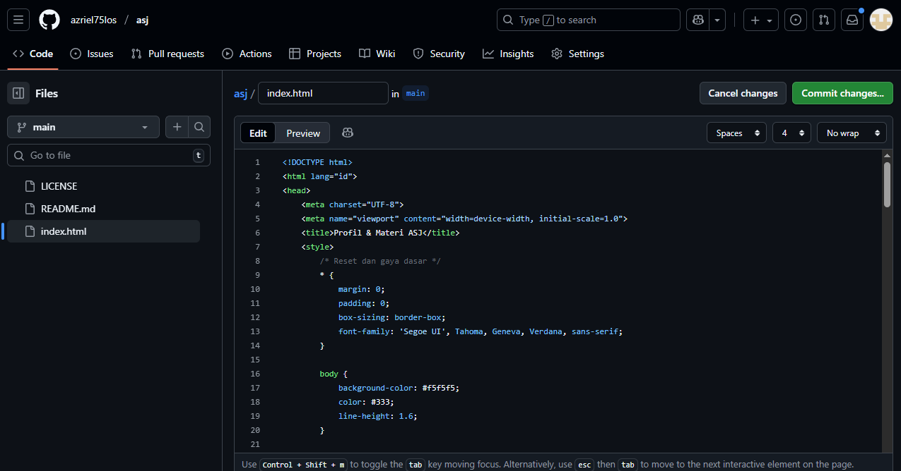

Profil & Materi ASJ
Pengantar Hosting dan cPanel
Muhammad Azril sidik
Halo! Saya adalah seorang siswa yang sedang mempelajari Administrasi Sistem Jaringan. Website ini berisi profil saya dan materi tentang pengantar hosting dan cPanel yang telah saya pelajari dalam mapel ASJ.
Materi Administrasi Sistem Jaringan
Pengertian dan Fungsi Hosting
Pengertian Hosting: Hosting adalah layanan yang memungkinkan individu dan organisasi untuk membuat situs web mereka dapat diakses melalui internet. Layanan hosting menyediakan server tempat file situs web disimpan dan dikelola.
Fungsi Hosting:
- Menyimpan file dan data website
- Memastikan website dapat diakses 24/7
- Menyediakan alamat IP untuk mengidentifikasi server
- Menyediakan bandwidth untuk transfer data
- Menjamin keamanan data website
Pengertian dan Fungsi cPanel

Pengertian cPanel: cPanel adalah panel kontrol berbasis web yang digunakan untuk mengelola hosting dan server. cPanel menyediakan antarmuka grafis yang memudahkan pengguna untuk mengelola berbagai aspek website mereka tanpa perlu pengetahuan teknis yang mendalam.
Fungsi cPanel:
- Mengelola domain dan subdomain
- Mengelola file website melalui File Manager
- Membuat dan mengelola database MySQL
- Mengelola email dan akun FTP
- Melakukan backup dan restore website
- Menginstal aplikasi web dengan mudah (seperti WordPress)